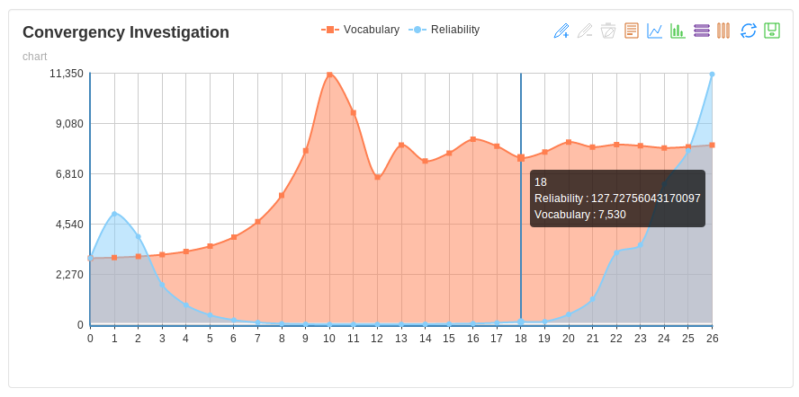

Traditional Paper-and-pencil Based Language Testing(PBLT)
↓
Computer Based Language Testing(CBLT)
↓
Computer Adaptive Language testing(CALT).
Assumptions and Principles
Statistically if one has a vocabulary of x, means he/she knows first x words by the frequency
order.
Each examinee answers truthfully.
Data sources
Extracted from all subtitle file from SUBTLEXus.
Query method
Based on recursive binary search
Convergency Investigation
Calculated with variance and depth of queries

It works.
Have a try!
Playground
Validity Analysis
Face Validity
We intended to test a person’s vocabulary,
and then designed the experiment.
Content Validity
The lexical library in this experiment includes all the frequency of words from 0 -100000, covering the full range of content.
It has two-way detailed tables,
and the number of tests in each layer were determined.
CALT has good content validity.
Concurrent Validity and Predict Validity
Based on IRT(Item Response Theory)
Flexibility in the management of the test
Prompt scores
At any time examinees gets similar results with little gaps.
CALT has great concurrent validity and predict validity.
Construct Validity
Based a unified reference criterion
A good stability, equivalence and objectivity
All the work is done by the computer itself
High safety and effectiveness.
Question number is large
Topic project is wide enough
Shortcomings
Physical considerations
Equipment may not always be available, or in working order, which may have an negative impact on the test taker.
Screen capacity is another physical consideration.
Performance Considerations
The presentation of a test on a computer may lead to different results from those that would be obtained if the same test were administered in a paper-and-pencil format.
Differences in the degree to which students are familiar with using computers or typewriter keyboards may lead to discrepancies in their performances on computer-assisted or computer-adaptive tests
Computer anxiety
Conclusion
We can concluded that CALT has good face validity, content validity, concurrent validity and predictive validity. However, for more complex language tests, obviously there will be some disadvantages which may have a negative impact on the test takers.In generally, the advantages outweigh its disadvantages, with the development of computer science, CALT will be a better way of testing than PPLT.